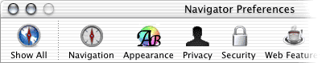

|
What is Chimera?
Chimera
is a new Mozilla
open-source project aimed at delivering a best-of-breed and fastest
browser for the Mac
OS X platform. Chimera uses Cocoazilla,
a variant of Fizzilla
that consists of a UNIX
back end wed to a Cocoa
front end.
The mozilla cross-platform UI
will be replaced with native Cocoa widgetry (such as customizable
toolbars and a drawer for the sidebar). The plan is to produce
only a browser (no other apps!), and to keep the UI as simple
and as clean as possible.
What
is this webpage?
This webpage is dedicated to the design of all the graphics used
in the Chimera internet broweser.
Before I started with the creation
of the graphics I first had a good look at the default graphics
that were packaged with Chimera. Secondly I asked myself what
I would want to change about those graphics. Last but not least
I did a short study, by reading the Aqua
User Interface Guidlines provided by Apple
and by taking a good look at all the icons Apple already made
for it's applications.
The application icon.
This icon is probably the most difficult icon to make I can think
of. Why? It's the icon that gives the application a face or recognition.
And because a browser isn't a real tool like most applications
are. It's just a media viewer. So what metaphor will you use?
The new Chimera icon as made by
me.
Asia
/ America
/ Europa

Html, URL/link, prefernces.
Download
set.
The icons.
Besides having fun making the application icon I also enjoy
making a complete toolbar replacement for my favorite browser
ever! Below are some samples of the entire package of replacement
icons which consists of 43 individualy designed icons. I know
I'm mad :)
This is the main window Toolbar
icon set as made by me.
This is the Download toolbar with my icons.

These are the Preference
icons.
The
future!
Right now I'm still buisy adding the latest toolbar icons the
devs added this last week (27-11-2002). But don't use them in
Navigator 0.6 or lower because some of the icons have been renamed
after 0.6! So use them only with the latest
nightly builds. Get them here.
At the moment I'm realy buisy
with constructing a new webpage, I will asure you it will be pretty
cool. Why do I make a new page, because I seem to generate a lot
of hits with this ugly page, so I just wanted to make it better
for the eyes for all those visitors.
Oh and since so many people would
love to have a desaturated graphite theme I' seriously thinking
of making one.
|